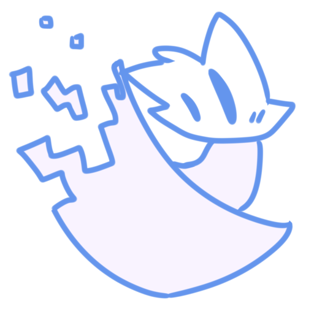
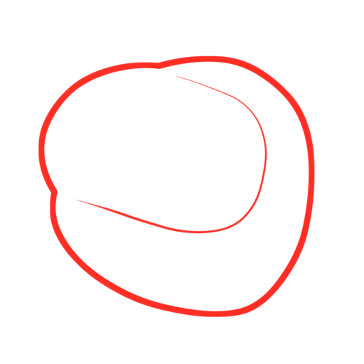
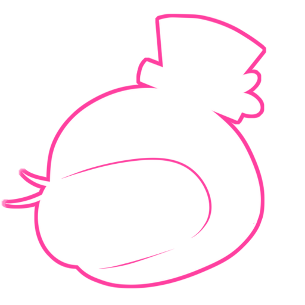
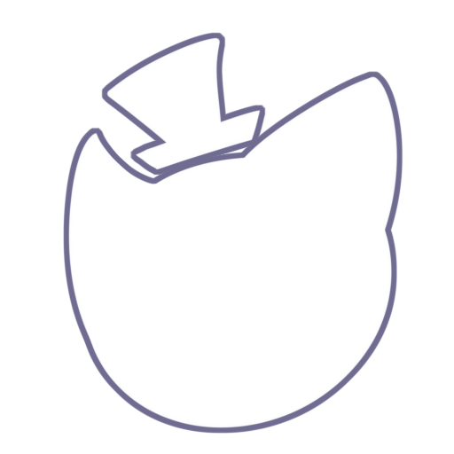

[Глючная мусорка Нико]
Niko_❮Arts❯
❮Художник сайта и Артов❯
Niko_❮Arts❯ 
❮Музыканты(?)❯
Почти вся музыка на сайте - Niko_❮Arts❯
Музыка в титрах - Suno AI (Suno.com) + Niko_❮Arts❯ 
❮Коддер❯
Niko_❮Arts❯
❮Бета-Тестеры❯
Niko_❮Arts❯
Nola Katskie 
YouRDon4ik 
G3hree 
Mashurinka 
Миноко (Омлета) 
Sk1ttleZ 
❮Хост и Домен❯
Github 
FreeDNS 
❮Отсылки в секретках❯
Sonic The Hedgehog 
Among Us 
❮Упомянутые игры❯
Sonic The Hedgehog
Undertale 
Among Us
❮Использованные источники❯
❮Использованные программы❯
NotePad++ - То где создавался код.
PaintToolSai2 - Место зарождения всех изображений сайта.
Fl Studio 12|20|21 - Музяшная бесовщина (да... я использовал 3 версии.).
Microsoft Edge / Opera GX / Google Chrome / FireFox / Яндекс браузер. - ... ... ну думаю тут и так понятно что тут всё тестировалось.
ClickTeam Fusion 2.5 - (возможно когда нибудь...)
Discord - Вы удивитесь насколько эта хрень удобна для хранения файлов.
GitHub - (да... я использовал не только веб-версию гитхаба...
[Истории]
❮История Глючной Мусорки Нико❯
Глючная Мусорка Нико была всего-лишь обычной группой ВК в которой я выкладывал своё творчество!
(ну и до сих пор выкладываю...)
До этого у меня было ещё 3-4 группы Вк, которые я ввёл совместно с моими друзьями...
Но как вы понимаете, иногда хочется иметь и что-то своё... так чтоооо... Бамс!
И я создал свою группу! 'w,
В ней я решил выкладывать все что я только хотел... то что я считал нужным...
И однажды я решил сделать в этой группе, маленькую википедию с информацией о всех моих персонажах!
Все было хорошо как для начала, трудно но хорошо!
Я выписывал информации о всех персонажах. и прописывал внутренний мир моих вселенных!
но как вы знаете... всё развивается... и мои миры тоже!
так что когда я делал Редизайн всех персонажей... и понял... что нужно так же обновить и их информацию...
а как вы сами понимаете... в ВК НЕВОЗМОЖНО отредактировать старые посты.
так чтооо... вместо того что-бы прописывать что-то с нуля, с лагучим интерфейсом и неудобным управлением.
Я решил создать свой сайт!
Сайт со всей информацией о вселенных, персонажах и т.д.
ну а что?
Могу, и делаю!
В общем... История Глючной мусорки Нико в том, что она отдала половину своей жизни из группы ВК в этот сайт.
...
в общем воть 'н '
❮История создания сайта❯
Я ещё с детства мечтал создать свой собственный сайт! 'w,
Как в виде своих первых начинаний, я использовал такие сайты как WIX что бы создать свой первый сайт...
Но спустя время, я был решительно настроен на то, что бы создать свой собственный сайт
со своим собственным кодом... и после окончания школы, я поступил в колледж на программиста!
Было трудно так как я много чего не понимал... та и щас не понимаю XD
Но я нашёл то, в чём я понимаю хоть что-то.. то в чём у меня выходит воплощать свои фантазии!
Это был HTML!
Я ещё с детства любил играться с кодом элемента разных сайтов и после того как я начал
изучать HTML... я понял...
Это именно то что я хотел всегда обрести... Именно эти знания...
...
И вот так.. мало по малу... я собирал этот сайт!
Те кто застал его первые версии наверняка могут согласиться каким низкокачественным он был...
но спустя время я его улучшал... дополнял... и даже щас я делаю его!
это один из немногих моих проектов... который я не забросил... и по сей день дополняю...
...
И это всё благодаря вам!
да, да! Я говорю о тебе!
Ты, читатель... ты причина того, почему я не бросил этот сайт...
...
Спасибо тебе...
... Спасибо всем вам!
Ведь без вас не было бы глючной мусорки Нико... Не было бы самого персонажа Нико...
Не было бы вообще всего!
... Вы причина почему я всё-таки решился сделать этот сайт!
Сайт... в котором я могу хранить всё моё творчество... Всех моих персонажей...
Вы причина почему этот сайт появился!
Вы наверное думаете... "И как это связанно с историей сайта..?"
...
Хех... Могу сказать... что вы и являетесь историей этого сайта!
Ведь именно вы положили начало появления этого сайта!
так что... да!
Вот она история сайта... История... В которой вы заставили одного мелкого глючного слайма...
Набраться сил сделать то... о чём он мечтал с детства!
Спасибо всем вам!
❮Специальная благодарность❯
Nola Katskie
YouRDon4ik
G3hree
Mashurinka
Миноко (Омлета)
Kersive 
DarkWinged 
Lians 
Дафна 
RomanKatana 
LeyterSoul 
Кит 
Мыха 
Бей 
Эджу
ФансиПрайс 
Изверг
Нинитада 
ну и конечно же... тебе!
Всем вам!
Ведь именно благодаря вам есть этот сайт!
Спасибо за игр- ой то есть сайт! 'w,
Кста.
Вы знали что на сайте есть секретки?
Интересно.. сможете ли вы найти их всех? 'w,
❮Статистика прохождения сайта❯
Прочитано текста: Дофига.
Потрачено нервных клеток: 48
Получено опыта: 5839587
Получено уровней: 384
Получено урона: 496956937498957748
Найдено секреток: ??/??
Ранг: S+